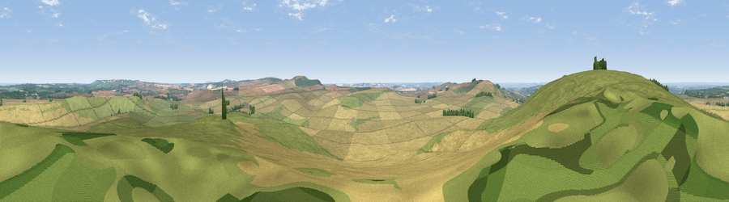

Viewpoint near Cherhill
#9098 in England · top 11% of its area beats it · near Cherhill · path 230 mWhere it is
The exact computed spot (SU 05775 68675). Click the marker for map links.
Public access: the nearest public right of way is about 230 m away — the final stretch may cross private land. Computed from Natural England's CRoW access layer and OpenStreetMap rights of way — not the legal definitive map. Always verify locally.
The view, rendered

A 360° render of this exact spot computed from the terrain model, tree cover and land cover — summer colours, afternoon light, calibrated against photographs of famous viewpoints. Real trees, hedges and buildings will differ in detail.
The panorama
Grey silhouette: terrain skyline in each direction (720 bearings, Earth curvature and refraction included). Dashed green: skyline with trees (+15 m) and buildings (+8 m) as obstacles. Blue strip: how far the ground is visible on each bearing.
Where the view opens
Wedge length = distance to the farthest visible ground on that bearing (vegetation-aware). Rings at 10, 25 and 50 km.
What fills the view
56% cropland · 42% grassland · 2% woodland
Angular shares of the visible panorama (visual magnitude), not map area. Landscape diversity 0.34 (0–1 Shannon).
Key numbers
More beautiful places nearby
The staircase of upgrades: each row has a higher view potential than everything closer. Driving times are estimates from straight-line distance, calibrated against real road routing — check an actual route before setting out.
| Place | Direction | Drive | Score |
|---|---|---|---|
| Viewpoint near Cherhill | WNW · 1 km | ~2 min | 71.2 |
| Viewpoint near Cherhill | WSW · 3 km | ~7 min | 73.6 |
| Morgan's Hill | WSW · 3 km | ~8 min | 74.3 |
| Viewpoint near Allington | SSE · 5 km | ~11 min | 75.6 |
| Martinsell viewpoint | ESE · 13 km | ~24 min | 76.9 |
| Viewpoint near Nympsfield | NW · 42 km | ~62 min | 77.5 |
| Viewpoint near Stinchcombe | NW · 43 km | ~63 min | 80.5 |
| Nottingham Hill | N · 60 km | ~83 min | 80.9 |
51.41706, -1.91834 · source: screening · position refined by local search. Computed location — check access rights before visiting.